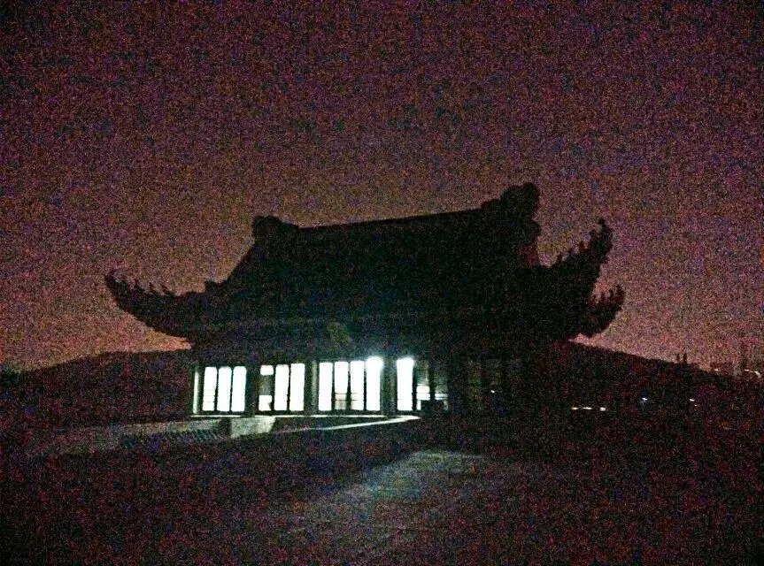

“ 那一年，在南阳街，有一棵桃树。桃树上面开花了，刘子骥，每一片都是你的名字，每一片都是你的故事。 ”
灯光缓缓的暗下，舞台上的女人凄然的旋转，花瓣从手间缓缓落下，已经无法分清，是鲜艳的桃花还是她火红的礼服更加耀眼…
大幕终于还是落了下去，暗恋桃花源，两个月，一拨人，在百年樱顶的舞台迎来了满场的观众和经久不息的掌声。
庆功的时候，很多人都哭了。云之凡说，她一想到会有别人来演云之凡就觉得难过，江滨柳头发还是半白半黑没有洗干净，一个20岁的大男孩，一直红着眼眶，两年前的袁老板一脸平静地说着“你们还能演三四年，我说不定以后再也不会演戏了”，而一旁， 护士早已哭得妆都化了……刚归国的传奇“老板娘”被一群人围着，郭社脸涨得通红，还拿着酒瓶，霸气的“云爷”字字玑珠，句句在理……从这些可爱的学姐学长那里，我看到了后继有人的欣慰和好友重逢的欢聚。这样的社团，才真的像一个大家庭吧。
暗恋桃花源是一部关于寻找，等待与失落的剧。
江滨柳等那朵白色的山茶花等了大半生，老病垂死之际，执手相看泪眼，竟也无语凝噎。
老陶是个无能的渔夫，妻子与房东偷情却敢怒不敢言，无奈去上游寻找他的大鱼，却误入桃花源，在桃花源又遇到了已经成家了的袁老板和春花，在桃源回家后却发现家已经不属于自己，再回归桃源时却无处觅其踪影。老陶一直在忙碌，在奔走，在挣扎，而这一切都不允许他自由，唯一的自由之处，也是无法回归的桃花源。其实，老陶，春花，袁老板，连在一起，不就是乌托邦式的“桃花源”么？
寻找刘子骥的女人看似是剧中无厘头的笑点，实际上却是这部戏的线索。一个疯女人，一场悲剧，一场喜剧。演着演着却感到一种贯穿剧始终的悲凉。刘子骥就是桃花源，就是云之凡，也是戈多，是那个时代的台湾、这个时代的大陆人心里的寻找，等待与失落。
江滨柳永远也见不到他梦中那个留着长辫荡着秋千的云之凡了；老陶永远也找不到他唯一的心安之处桃花源了；女人永远也找不到她心心念念的刘子骥了；而我们，也不会再有这样的机会再演一次《暗恋桃花源》了……当“刘子骥，刘子骥——”的绝望呼喊响彻樱顶舞台，我想，我终于开始读懂了《暗恋桃花源》，也终于可以和老陶他们说一声“再见”了。